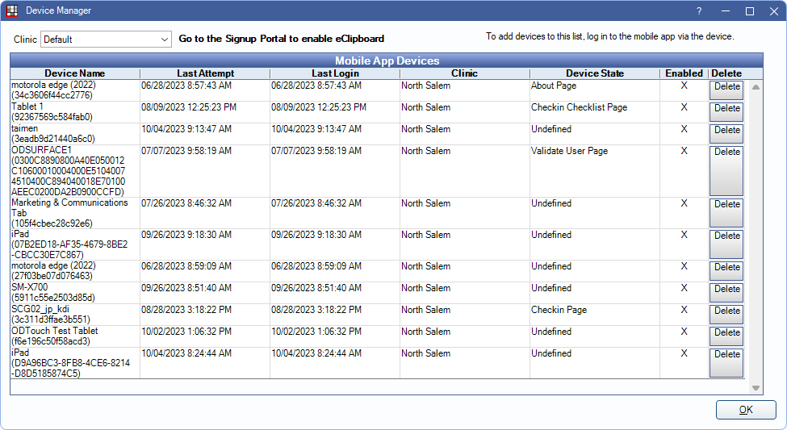

Device Manager
Manage tablets and smartphones that have logged into the database via eClipboard, ODMobile, or ODTouch.
In eServices Setup, click Manage Devices.
Clinics: Filter devices by the clinic they are logged into.
Mobile App Devices Grid:
- Device Name: The device name logged into the database. Device names can be edited in the About menu of each app.
- Last Attempt: The last time the device attempted to log into an app.
- Last Login: The last time the device logged into an app.
- Clinic: The clinic associated with the device.
- Device State: Displays which stage of an app the device is currently in.
- Enabled: Click to enable this device to access an app. Click the X to disable access.
- Delete: Delete the device from the list.